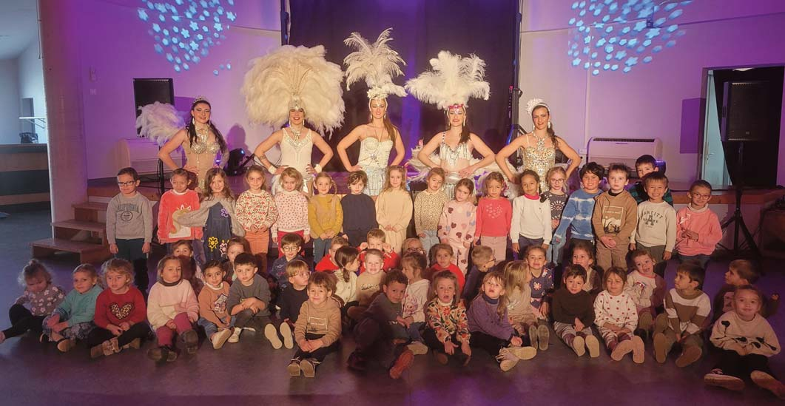

12 Enfance et Jeunesse ( ( ( Dans le cadre de son engagement en faveur de l’accès à la culture pour tous, l’école Maternelle a récemment proposé aux élèves un moment artistique original avec le spectacle « Cabaret Milaya (by FG) » , spécialement conçu pour le jeune public. Mêlant avec �nesse cabaret traditionnel et formes plus contemporaines, cette représentation a permis aux enfants de découvrir un univers riche en couleurs, en musique et en expression scénique. Adapté à leur sensibilité, le spectacle a su éveiller leur curiosité tout en leur offrant un véritable moment de plaisir et d’émerveillement. Il a été généreusement offert aux élèves par l’association Feelingood. Son �nancement a été rendu possible grâce à une représentation ouverte au public, organisée le lendemain. L’équipe éducative tient à adresser ses sincères remerciements à l’association pour son engagement et son soutien précieux à la vie cultu- relle locale. Au-delà du spectacle lui-même, cette ac- tion s’inscrit pleinement dans le Parcours d’Éducation Artistique et Culturelle des élèves. Elle a donné lieu à plusieurs prolongements pédagogiques en classe, École maternelle École maternelle permettant d’approfondir les découvertes : exploration de l’architecture emblématique du Moulin Rouge, immersion dans l’univers de la mode et du métier de couturier, ainsi qu’une initiation au célèbre French Cancan en éducation musicale ! Ce spectacle a permis à l’équipe pédagogique d’aborder avec les élèves le nouveau programme scolaire « Éduquer à la vie affective et relationnelle ». Il a été complété par deux autres initiatives culturelles : un spectacle d’art contemporain « Conciliabule » de la Waide Compagnie, avec le soutien �nancier de la Municipalité, et un spectacle d’ombres chinoises « Volatile Ombré » par la compagnie La Rotule, �nancé grâce aux dons des familles. L’équipe pédagogique de l’école Maternelle remercie vivement les parents d’élèves, l’association FeelinGood et la Municipalité pour leur soutien �nancier à ces différentes actions culturelles ! Cette expérience audacieuse illustre l’importance de proposer aux élèves des rencontres artistiques variées, favorisant à la fois leur ouverture culturelle, leur sensibilité et leur créativité. Plumes, strass et paillettes : l’art s’invite à l’école !